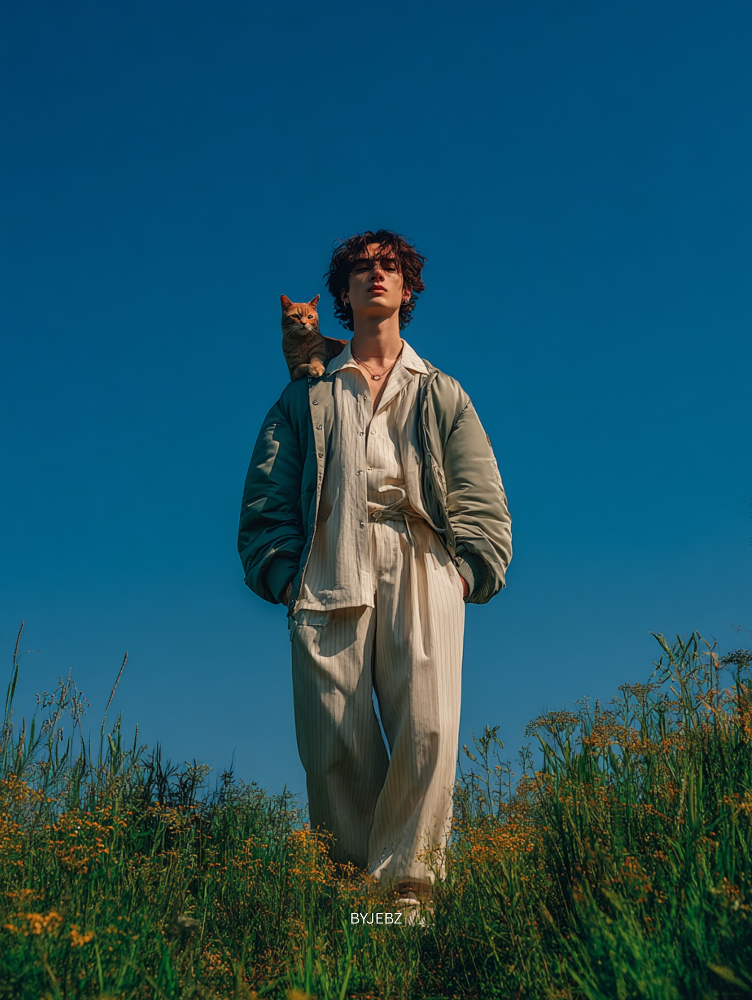
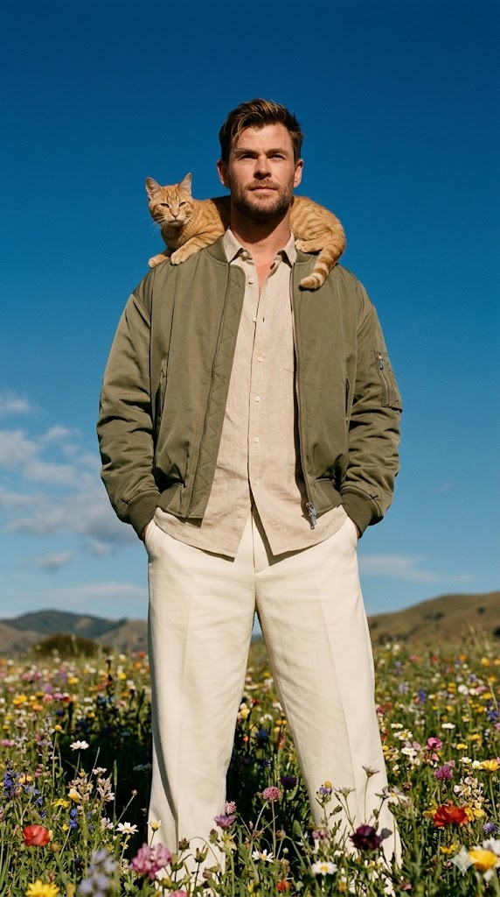

"How to Create an Editorial Wildflower Portrait with Cat and Exact Face Match" | Brainloom
Generate a stunning ultra-realistic full-body portrait of yourself in a wildflower field with a ginger cat on your shoulder. This prompt ensures 100% facial identity while delivering editorial fashion quality, DSLR sharpness, and cinematic color grading.
Generated Images


Prompt Explanation
The Prompt
Ultra-realistic full-body cinematic photo using my uploaded photo as the main reference, keep my face 100% identical. Standing in a wildflower field, low-angle shot, wearing a beige linen shirt, cream wide-leg trousers, and an oversized olive bomber jacket, hands in pockets. A small ginger cat resting calmly on my shoulder. Natural daylight, deep clear blue sky, soft shadows, cinematic color grading, sharp focus, DSLR quality, realistic fabric and fur, editorial fashion style. ar 9:16
How to Use This Prompt
Begin by selecting your best reference photo—one with clear facial features, natural lighting, and a neutral expression works best for identity preservation. Upload this image to your AI generator like Midjourney and copy the generated link. Paste the link first, then add the complete prompt text. The image link must come before any words to establish it as the primary visual reference. Once you run the generation, you'll get four initial options. Study each one closely—pay attention to facial likeness first, then evaluate the clothing details, the cat's appearance, and the overall composition. If the face isn't perfect, choose the closest match and generate variations. Sometimes the cat might appear in an odd position or with unrealistic fur; if that happens, add more specific guidance like 'cat sitting calmly, realistic ginger fur texture' in your next iteration. The clothing description is quite detailed, so if the jacket color or fit isn't right, adjust those terms. For example, if the bomber jacket looks too heavy, try 'lightweight olive bomber jacket.' The 'low-angle shot' instruction means the camera is pointing upward slightly, making the figure look more imposing—if you prefer a different perspective, change this to 'eye-level shot' or 'high-angle shot.' Run multiple rounds, tweaking one element at a time until the image matches your vision perfectly.
Why This Prompt Works
This prompt is exceptionally well-crafted because it balances multiple complex elements—human likeness, animal interaction, specific fashion items, and environmental detail—without overwhelming the AI. The opening line is crystal clear: 'using my uploaded photo as the main reference, keep my face 100% identical.' This leaves no room for interpretation. The AI understands that your facial identity is the non-negotiable foundation upon which everything else is built. The prompt then layers in detailed clothing descriptions—'beige linen shirt, cream wide-leg trousers, oversized olive bomber jacket'—which serve multiple purposes. First, they establish a specific editorial aesthetic. Second, they give the AI clear material cues: 'linen' suggests texture and wrinkles, 'wide-leg' indicates a particular silhouette, 'oversized' tells it the fit should be relaxed rather than tailored. These small words dramatically affect the final image quality. The inclusion of 'a small ginger cat resting calmly on my shoulder' is a sophisticated element. By specifying 'resting calmly,' you're preventing the AI from generating a jumping, playing, or anxious cat, which would ruin the serene editorial mood. The phrase 'realistic fabric and fur' is crucial—it tells the AI to render textures with care, distinguishing between the smoothness of linen, the weight of the bomber jacket, and the softness of cat fur. The technical terms at the end—'sharp focus, DSLR quality, cinematic color grading'—act as a quality filter, pushing the AI away from its default slightly soft, painterly output toward something that mimics professional photography equipment and post-processing. Each element reinforces the others, creating a cohesive instruction set that guides the AI toward a specific, high-quality result.
Prompt Variations
- {'variation': "Replace the wildflower field with 'a misty morning in a lavender field in Provence' and change the clothing to 'a flowing white linen dress and a straw hat.' This shifts the aesthetic from modern editorial to romantic, destination-fashion editorial, perfect for travel-inspired content or fantasy portraits."}
- {'variation': "Change the cat to 'a small tabby kitten playing with a falling autumn leaf' and adjust the setting to 'an oak forest during fall with golden leaves covering the ground.' This variation adds movement and whimsy, creating a more dynamic, story-driven image while keeping the same fashion-forward quality."}
- {'variation': "Modify the pose to 'holding a vintage film camera, looking away from the lens, candid expression' and keep the rest of the elements. This transforms the portrait into a behind-the-scenes style editorial shot, ideal for creative personal branding or photography-themed content."}
Frequently Asked Questions
-
How do I ensure the cat looks realistic and not cartoonish?The phrase 'realistic fur' is essential, but you can strengthen it by adding 'detailed fur texture, individual hairs visible' if needed. Also, specifying the cat's position—'resting calmly on my shoulder'—helps the AI place it naturally rather than in an awkward, generated-on-the-spot pose that often looks artificial.
-
What does 'editorial fashion style' actually mean for the output?It tells the AI to draw from fashion magazine photography—think Vogue editorial spreads. This influences the posing, lighting, color grading, and overall polish. The image should look like it belongs in a high-end fashion publication, with careful attention to composition, styling, and mood rather than a casual snapshot.
-
Why is 'low-angle shot' included and should I keep it?Low-angle shots make the subject look powerful, heroic, or larger than life. In a wildflower field, it also emphasizes the sky and creates a more dramatic composition. If you want a more approachable, intimate feel, change it to 'eye-level shot.' If you want to emphasize the flowers and ground, try 'high-angle shot.'
Related Prompts

Cinematic Horror Portrait With Lighter
AI prompt for an 8K cinematic horror portrait. The subject holds a lit lighter close to his face, the orange-blue fla...
View Prompt
Full Body Fashion Graffiti Portrait
AI prompt for a full-body fashion portrait featuring a model with exact facial features and hairstyle from a referenc...
View Prompt
How To Generate A High Contrast Yellow And Black Cyberpunk Portrait
Learn how to create a striking, high-fashion AI portrait featuring a strict yellow and black color palette. This prom...
View Prompt
How To Create A High Fashion Power Portrait With Abstract Art
Generate a sophisticated editorial fashion shot featuring a tailored power suit and a commanding pose. Includes a uni...
View Prompt
South Indian Cinematic Movie Poster Prompt
Generate a dramatic South Indian cinema-style movie poster using your photo. Creates an epic composition with a close...
View Prompt
Golden Hour Portrait Car Fine Art Photography Prompt
A fine art photography prompt for a cinematic golden hour portrait. Creates a western-inspired scene of a person with...
View Prompt